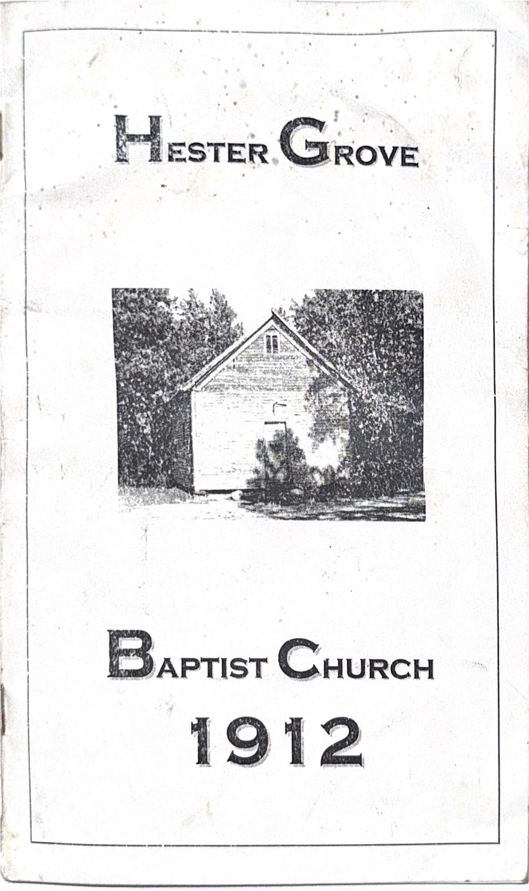
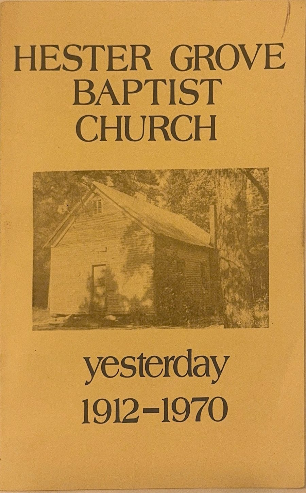

Hester Grove has a long, rich history in the Hurdle Mills community — including years of church programs, anniversaries, and milestones documented in print over the decades. Two of those original programs have been preserved and are shared here.

An early printed program from the church's founding era, preserving the names, order of service, and traditions of Hester Grove's first years in Hurdle Mills.
View Full Program (PDF)
A retrospective program looking back on Hester Grove's first several decades, from 1912 through 1970 — a record of the congregation's growth and faithfulness over more than half a century.
View Full Program (PDF)Additional church programs and historical materials are being scanned and will be added here over time — a growing archive of Hester Grove's story, in the congregation's own words.